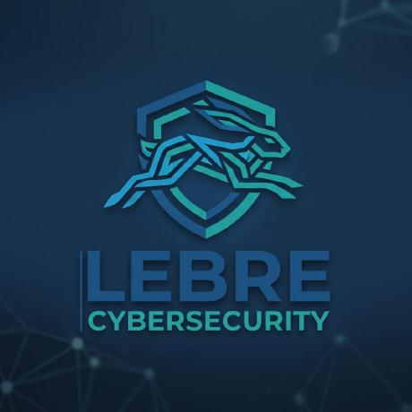

Desarrollo · DevOps · Seguridad
Construyo software.Y entiendo lo que ocurre debajo.
Soy Daniel Lebrero. Diseño aplicaciones web y móviles, las despliego y convierto cada decisión técnica en una oportunidad para aprender.
- Aplicaciones reales
- Infraestructura propia
- Seguridad por diseño

Aprendiendo y construyendo01 / BUILD02 / SECURE03 / OPERATEgestionados
catalogados
destacadas
BUILD ◆ TEST ◆ SECURE ◆ DEPLOY ◆ LEARN ◆ BUILD ◆ TEST ◆ SECURE ◆ DEPLOY ◆ LEARN ◆
01 / Sobre mí
No colecciono herramientas.Construyo criterio.
Me interesa el recorrido completo de una idea: convertirla en producto, proteger sus límites, desplegarla y observar cómo se comporta.
Una PWA me llevó a React Native. Una utilidad de consola me llevó a pensar en autenticación y SSRF. Un contenedor me llevó a diseñar redes, observabilidad y recuperación.
Mi objetivo no es que algo simplemente funcione. Es poder explicar por qué funciona, cómo falla y qué cambiaría en la siguiente iteración.
Construir
Del problema al producto, con interfaces claras y decisiones mantenibles.
Proteger
Mínimo privilegio, límites explícitos y amenazas consideradas desde el diseño.
Operar
Despliegues reproducibles, métricas útiles y documentación recuperable.
02 / Proyectos seleccionados
Ideas convertidasen sistemas reales.
Cada proyecto empezó resolviendo una necesidad. El valor apareció al afrontar todo lo que rodea a la primera versión.01● Web + mobile
ClassControl
PWA y aplicación nativa para gestionar alumnos, calendario, clases y cobros. La versión móvil comparte Supabase y RLS, pero replantea navegación, sesión y deep links.
- React
- Expo
- Supabase
- SecureStore
02● Desplegado
yt-dlp Web
Interfaz multiusuario con Flask. Incorpora autenticación, protección CSRF, defensa contra SSRF y control de concurrencia.
- Python
- Flask
- SQLite
- AppSec
03● LAN / VPN
Codeshare Local
Editor colaborativo en tiempo real sin analítica, CDN ni peticiones a terceros. Sincroniza contenido, presencia y cursores con WebSockets.
- Node.js
- WebSockets
- JSON
- Nginx
04● Preproducción
Top & Performance
Landing para programas de entrenamiento y nutrición con pagos únicos o fraccionados. Stripe crea el checkout; los webhooks firmados mantienen la verdad del servidor.
- Python
- Stripe
- Docker
- Webhooks
01Checkout→02Webhook→03Activación
05● Solo lectura
Lebre Services
Dashboard propio para consultar 19 servicios lógicos sin entregar a la aplicación control total sobre Docker.
- Python
- Docker API
- Socket Proxy
03 / Laboratorio de sistemas
Un servidor.Muchas capas.
Un entorno propio para practicar entrada, red, datos, seguridad, observabilidad y operación.UsuariosLAN · VPN · WEB
NginxHTTPS · PROXY · WEBSOCKETS
AplicacionesWEB · MOBILE · TOOLS
DatosSQL · SQLITE · VOLUMES
PlataformaDOCKER · NETWORKS
Entrada controlada
Nginx concentra HTTPS y mantiene los backends en localhost. Publicar también implica saber retirar.
Nginx · TLS · CA localRed privada
WireGuard ofrece acceso remoto sin convertir cada panel administrativo en un servicio público.
WireGuard · Pi-hole · DNSVisibilidad
Wazuh aporta eventos. Grafana y los exporters convierten síntomas en hipótesis comprobables.
Wazuh · Grafana · cAdvisorDatos propios
Nextcloud y MariaDB convierten persistencia, backup y recuperación en responsabilidades concretas.
Nextcloud · MariaDB · VolumesIntegración
Siete componentes multimedia muestran que una solución existe cuando todo el flujo puede explicarse.
Jellyfin · Sonarr · Radarr“Running” no significa “saludable”.
Operar bien empieza cuando el estado deja de ser binario.
04 / Aprendizaje continuo
Aprender, aplicar,volver a medir.
La formación se queda cuando encuentra un proyecto real sobre el que hacer preguntas.Diseñar software mantenible
TDD, patrones de diseño, CI/CD y arquitectura hexagonal. De Red-Green-Refactor a pipelines con GitHub Actions y Docker.
- TDD
- Design Patterns
- CI/CD
- Hexagonal
Entender el ataque para construir mejor
Hacking ético y práctica posterior en entornos controlados: metodología web, XSS, autenticación y análisis de impacto.
- Web Security
- DockerLabs
- XSS
- 2FA
Microsoft Azure Fundamentals
Preparación activa del examen AZ-900 para reforzar fundamentos de nube, servicios, seguridad, gobierno y costes.
Examen reservadoNo certificado todavía
Ingeniería Informática
Contexto académico para conectar fundamentos, prácticas y TFG con problemas reales de desarrollo, arquitectura e infraestructura.
05 / Caja de herramientas
Tecnología con contexto.
DockerPythonReactNginxSupabaseJavaScriptReact NativeSQLiteGitHub ActionsLinuxWebSocketsAppSecGrafanaWazuhStripeWireGuard
06 / Contacto